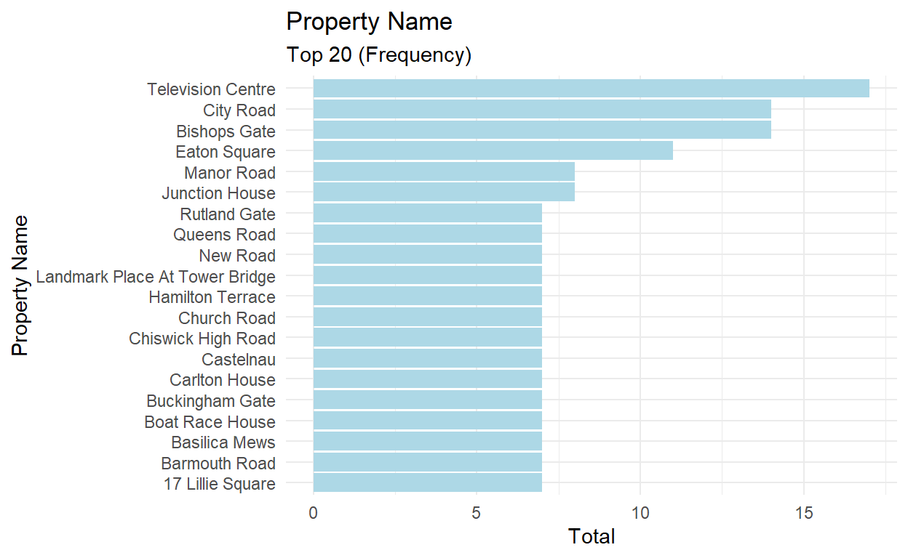
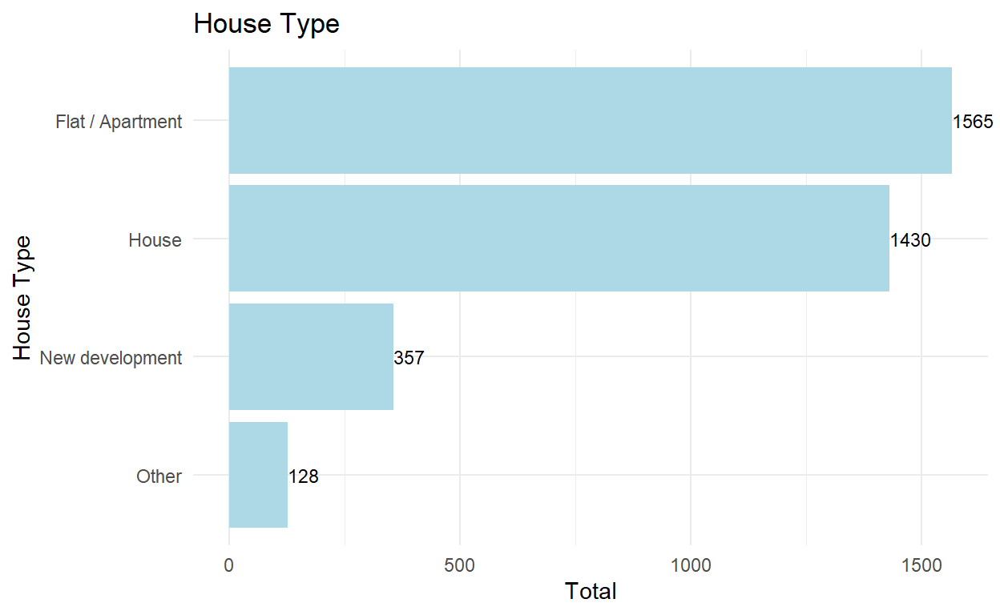
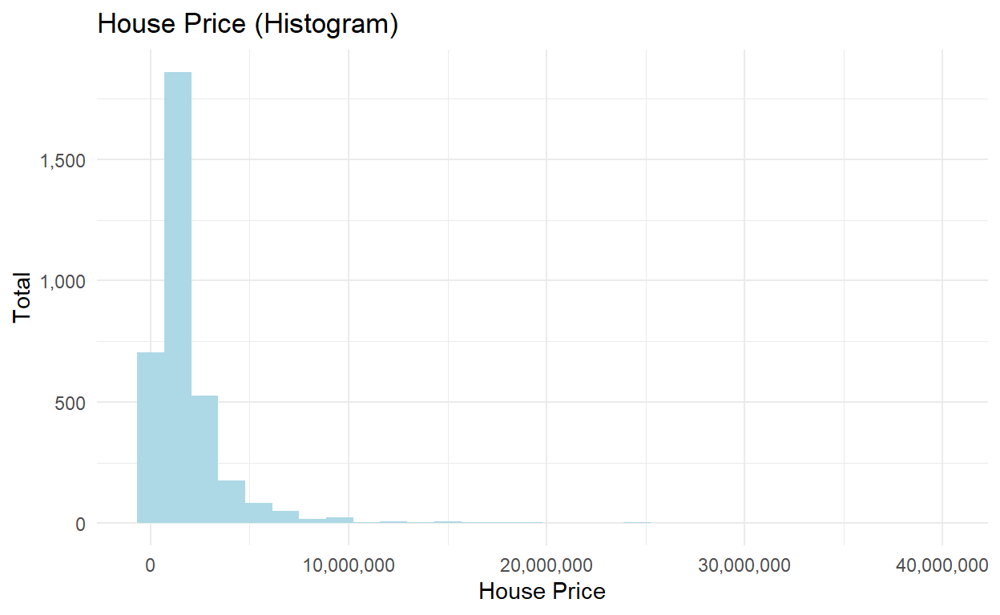
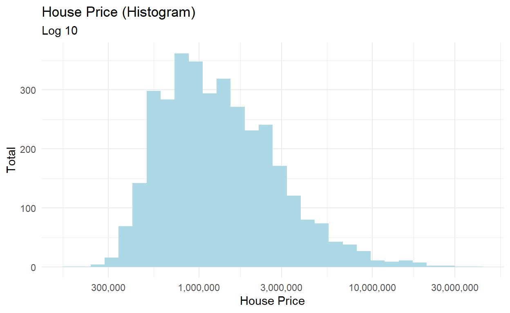
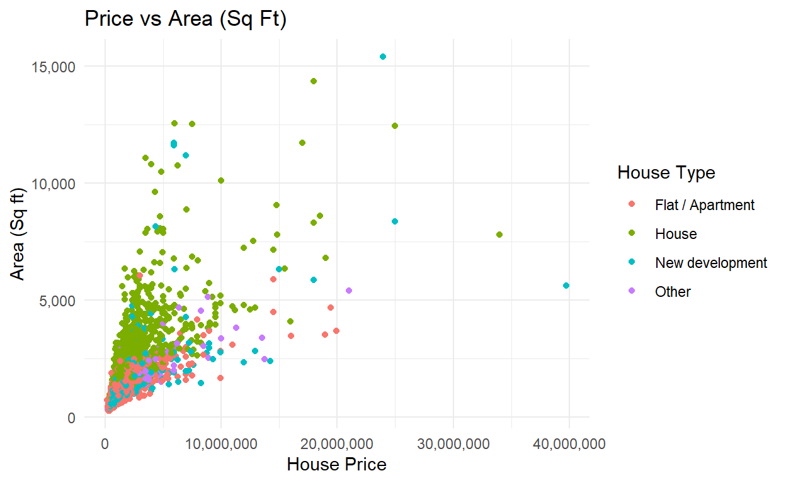
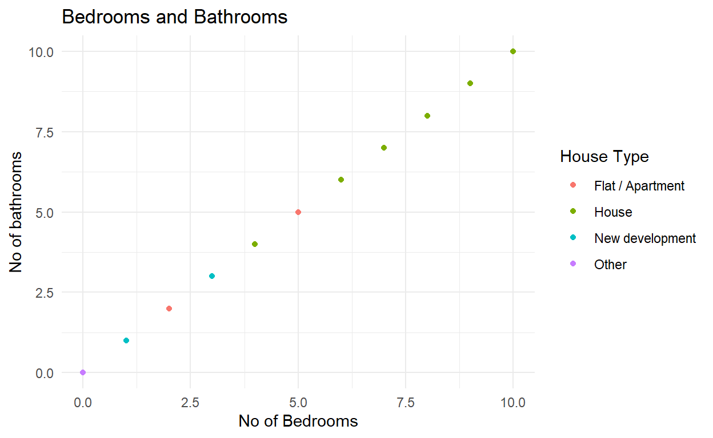
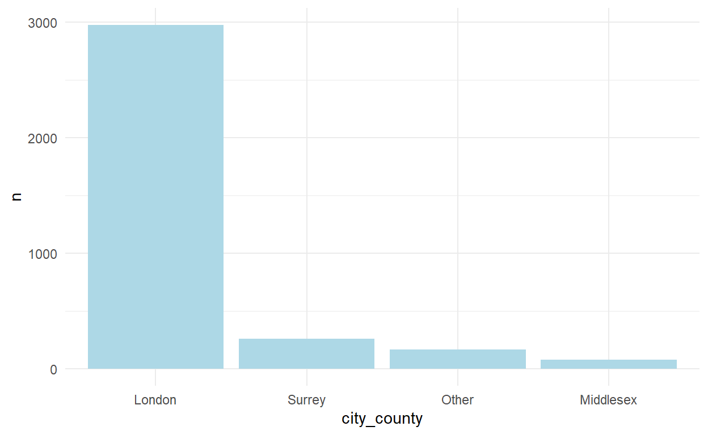
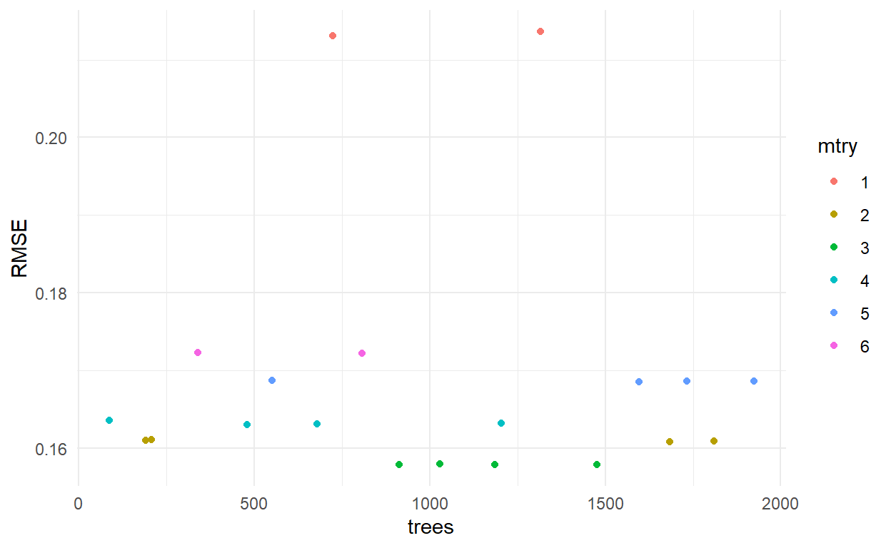
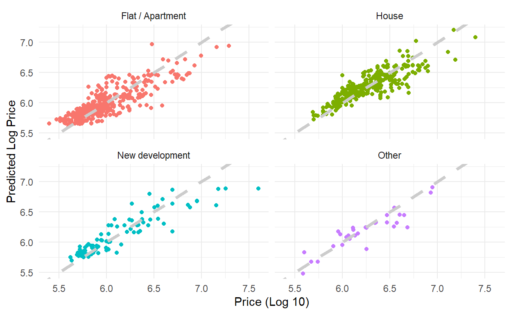

Predicting House Price in London using “tidymodels” in R-Studio
In this post, we will be doing a prediction using Random Forest from Tidymodels in R. This data set can be obtained from https://www.kaggle.com/arnavkulkarni/housing-prices-in-london.
london <- read_csv(here("_posts/house-price/london.csv")) %>%
clean_names()
The dataset contains 3480 observations and the features:
Property name
Price (£)
House type
Area (Square Feet)
Number of bedrooms
Number of bathrooms
Number of receptions
Location
City/Country
Postal Code
london %>%
glimpse()
Rows: 3,480
Columns: 11
$ x1 <dbl> 0, 1, 2, 3, 4, 5, 6, 7, 8, 9, 10, 11, 12, 1~
$ property_name <chr> "Queens Road", "Seward Street", "Hotham Roa~
$ price <dbl> 1675000, 650000, 735000, 1765000, 675000, 4~
$ house_type <chr> "House", "Flat / Apartment", "Flat / Apartm~
$ area_in_sq_ft <dbl> 2716, 814, 761, 1986, 700, 403, 1548, 560, ~
$ no_of_bedrooms <dbl> 5, 2, 2, 4, 2, 1, 4, 1, 3, 2, 6, 6, 5, 2, 2~
$ no_of_bathrooms <dbl> 5, 2, 2, 4, 2, 1, 4, 1, 3, 2, 6, 6, 5, 2, 2~
$ no_of_receptions <dbl> 5, 2, 2, 4, 2, 1, 4, 1, 3, 2, 6, 6, 5, 2, 2~
$ location <chr> "Wimbledon", "Clerkenwell", "Putney", "Putn~
$ city_county <chr> "London", "London", "London", "London", "Lo~
$ postal_code <chr> "SW19 8NY", "EC1V 3PA", "SW15 1QL", "SW15 1~Top 20 Property Name (Frequency)
london %>%
count(property_name, sort = TRUE) %>%
head(20) %>%
mutate(property_name = fct_reorder(property_name, n)) %>%
ggplot(aes(x = property_name, y = n)) +
geom_col(fill = "light blue") +
coord_flip()+
labs(title = "Property Name",
subtitle = "Top 20 (Frequency)",
x = "Property Name",
y = "Total")

london <- london %>%
mutate(house_type = fct_lump(house_type, n = 3))
london %>%
count(house_type, sort = TRUE) %>%
mutate(house_type = fct_reorder(house_type, n)) %>%
ggplot(aes(x = house_type, y = n)) +
geom_text(aes(label= n),
vjust=0.5, hjust=0, size = 3)+
geom_col(fill = "light blue") +
coord_flip(clip = "off")+
labs(title = "House Type",
x = "House Type",
y = "Total")

The graph is skewed to the right, which means there are more lower price houses as compared to the higher price houses.
london %>%
ggplot(aes(x = price)) +
geom_histogram(fill = "light blue") +
scale_y_continuous(labels = scales::comma_format()) +
scale_x_continuous(labels = scales::comma_format()) +
labs(title = "House Price (Histogram)",
x = "House Price",
y = "Total")

london %>%
ggplot(aes(x = price)) +
geom_histogram(fill = "light blue") +
scale_y_continuous(labels = scales::comma_format()) +
scale_x_log10(labels = scales::comma_format()) +
labs(title = "House Price (Histogram)",
subtitle = "Log 10",
x = "House Price",
y = "Total")

Notice that the most expensive house is only slightly higher than 5,000 sq ft in area size. We could also see that most of the houses are at the lower side of the price and the area size.
london %>%
ggplot(aes(x = price, y = area_in_sq_ft, colour = house_type)) +
geom_point() +
scale_y_continuous(labels = scales::comma_format()) +
scale_x_continuous(labels = scales::comma_format()) +
labs(title = "Price vs Area (Sq Ft)",
x = "House Price",
y = "Area (Sq ft)",
colour = "House Type")

It appears that the total number of bathrooms and the total number of bedrooms are the same. If it does, that does not make sense at all.
london %>%
ggplot(aes(x = no_of_bedrooms, y = no_of_bathrooms, colour = house_type)) +
geom_point() +
scale_y_continuous(labels = scales::comma_format()) +
scale_x_continuous(labels = scales::comma_format()) +
labs(title = "Bedrooms and Bathrooms",
x = "No of Bedrooms",
y = "No of bathrooms",
colour = "House Type")

Let’s check, just to be sure. We will check for the total number of receptions too
london %>%
mutate(check_room = if_else(no_of_bedrooms == no_of_bathrooms,
"SAME",
"DIFFERENT"),
check_reception = if_else(no_of_bedrooms == no_of_receptions,
"SAME",
"DIFFERENT")) %>%
select(check_room, check_reception) %>%
unique()
# A tibble: 1 x 2
check_room check_reception
<chr> <chr>
1 SAME SAME Yes, there is no difference between the total number of bathrooms and the total number of bedrooms / receptions. We will just use the number of bedrooms then.
Location (Frequency). Too many missing values in the Location column. We will not include this column then for prediction later.
| location | n |
|---|---|
| NA | 962 |
| Putney | 126 |
| Battersea | 94 |
| Esher | 88 |
| Wandsworth | 87 |
| Wimbledon | 82 |
| Barnes | 81 |
| Fulham | 74 |
| Chiswick | 67 |
| Richmond | 63 |
london <- london %>%
mutate(city_county = fct_lump(city_county, n = 3))
london %>%
count(city_county) %>%
mutate(city_county = fct_reorder(city_county, -n)) %>%
ggplot(aes(x = city_county, y = n)) +
geom_col(fill = "light blue")

We will use the logarithm of the house price for prediction. Features that we will use:
london <- london %>%
mutate(price_log = log10(price))
london_predict <- london %>%
select(house_type, area_in_sq_ft, no_of_bedrooms, city_county, price_log)
Split the data set into training and testing sets
We will then try to tune:
mtry
trees
library(tidymodels)
set.seed(1000)
london_split <- initial_split(london_predict)
london_train <- training(london_split)
london_test <- testing(london_split)
london_split
<Analysis/Assess/Total>
<2610/870/3480>Define a recipe
price_recipe <- london_train %>%
recipe(price_log ~.) %>%
step_dummy(city_county)
Define a workflow
price_workflow <- workflow() %>%
add_recipe(price_recipe)
We will then define model specifications
random_forest_model <- rand_forest(
mode = "regression",
mtry = tune(),
trees = tune()
) %>%
set_engine("ranger")
random_forest_model
Random Forest Model Specification (regression)
Main Arguments:
mtry = tune()
trees = tune()
Computational engine: ranger random_forest_workflow <- price_workflow %>%
add_model(random_forest_model)
random_forest_workflow
== Workflow ==========================================================
Preprocessor: Recipe
Model: rand_forest()
-- Preprocessor ------------------------------------------------------
1 Recipe Step
* step_dummy()
-- Model -------------------------------------------------------------
Random Forest Model Specification (regression)
Main Arguments:
mtry = tune()
trees = tune()
Computational engine: ranger Finding the best values using a grid. We will also fold using cross validation
set.seed(1000)
price_folds <- vfold_cv(london_train)
random_forest_grid <- tune_grid(
random_forest_workflow,
resamples = price_folds,
grid = 20
)
random_forest_grid
# Tuning results
# 10-fold cross-validation
# A tibble: 10 x 4
splits id .metrics .notes
<list> <chr> <list> <list>
1 <rsplit [2349/261]> Fold01 <tibble [40 x 6]> <tibble [0 x 1]>
2 <rsplit [2349/261]> Fold02 <tibble [40 x 6]> <tibble [0 x 1]>
3 <rsplit [2349/261]> Fold03 <tibble [40 x 6]> <tibble [0 x 1]>
4 <rsplit [2349/261]> Fold04 <tibble [40 x 6]> <tibble [0 x 1]>
5 <rsplit [2349/261]> Fold05 <tibble [40 x 6]> <tibble [0 x 1]>
6 <rsplit [2349/261]> Fold06 <tibble [40 x 6]> <tibble [0 x 1]>
7 <rsplit [2349/261]> Fold07 <tibble [40 x 6]> <tibble [0 x 1]>
8 <rsplit [2349/261]> Fold08 <tibble [40 x 6]> <tibble [0 x 1]>
9 <rsplit [2349/261]> Fold09 <tibble [40 x 6]> <tibble [0 x 1]>
10 <rsplit [2349/261]> Fold10 <tibble [40 x 6]> <tibble [0 x 1]>random_forest_grid %>%
collect_metrics()
# A tibble: 40 x 8
mtry trees .metric .estimator mean n std_err .config
<int> <int> <chr> <chr> <dbl> <int> <dbl> <chr>
1 4 1204 rmse standard 0.163 10 0.00273 Model01
2 4 1204 rsq standard 0.754 10 0.00799 Model01
3 2 1683 rmse standard 0.161 10 0.00288 Model02
4 2 1683 rsq standard 0.767 10 0.00596 Model02
5 6 806 rmse standard 0.172 10 0.00284 Model03
6 6 806 rsq standard 0.729 10 0.00885 Model03
7 2 191 rmse standard 0.161 10 0.00292 Model04
8 2 191 rsq standard 0.767 10 0.00610 Model04
9 5 1733 rmse standard 0.169 10 0.00282 Model05
10 5 1733 rsq standard 0.739 10 0.00862 Model05
# ... with 30 more rowsBased on the graph below, we could see that most of the hyperparameters produced good results (low RMSE). It can also be seen that mtry = 1 produced the worst RMSE.
random_forest_grid %>%
collect_metrics() %>%
filter(.metric == "rmse") %>%
mutate(mtry = as.factor(mtry)) %>%
ggplot(aes(x = trees, y = mean, colour = mtry)) +
geom_point() +
labs(y = "RMSE")

best_rmse <- select_best(random_forest_grid, "rmse")
final_random_forest <- finalize_model(
random_forest_model,
best_rmse
)
final_random_forest
Random Forest Model Specification (regression)
Main Arguments:
mtry = 3
trees = 1185
Computational engine: ranger Based on the RMSE and R-square, I would say that is quite decent.
final_workflow <- workflow() %>%
add_recipe(price_recipe) %>%
add_model(final_random_forest)
final_model<- final_workflow %>%
last_fit(london_split)
final_model %>%
collect_metrics()
# A tibble: 2 x 3
.metric .estimator .estimate
<chr> <chr> <dbl>
1 rmse standard 0.155
2 rsq standard 0.786predict_result <- final_model %>%
collect_predictions() %>%
select(.pred) %>%
bind_cols(london_test) %>%
rename(predicted_random_forest = .pred)
predict_result %>%
ggplot(aes(x = price_log, y = predicted_random_forest,
colour = house_type))+
geom_point()+
geom_abline(lty = 2, color = "gray80", size = 1.5)+
facet_wrap(house_type ~.) +
labs(x = "Price (Log 10)",
y = "Predicted Log Price") +
theme(legend.position = "none")

From this graph, we could get an overview of the actual price vs the predicted price. Please let me know your thoughts on this.
Thanks